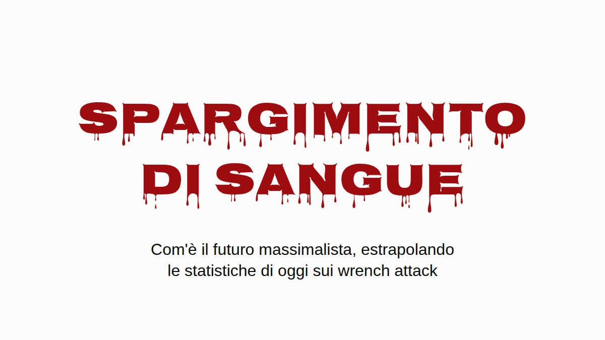

Mettiamo che i massimalisti vincano. Non la versione col prezzo obiettivo, quella vera: bitcoin è dove la gente tiene la propria ricchezza, e la tiene come le dice la comunità, in autocustodia, a casa. A me piacerebbe che quel mondo esistesse. Per questo mi sembra il caso di chiedersi che aspetto ha se ci fai passare dentro i numeri di oggi sui wrench attack.
La risposta breve è che Inghilterra e Galles finirebbero per seppellire gente più o meno al ritmo con cui l'Ucraina ha seppellito civili nel 2025, per furti in casa che succedono già oggi. La risposta lunga ha delle avvertenze, sono tutte qui sotto, e nessuna fa sparire il problema.
Un wrench attack su ventidue
Jameson Lopp tiene un registro pubblico degli attacchi fisici contro chi detiene cripto. È la migliore documentazione che esista, ed è un campione preso dalla stampa, quindi gli sfugge tutto quello che sui giornali non ci è mai arrivato. Mi sono passato tutti i 351 episodi distinti che contiene e ho letto ogni titolo che parlava di un morto. La ricerca per parola chiave su cui poggia la cifra pubblicata pesca qualche riga sbagliata (una cittadina che si chiama Killingly, due aggressori uccisi dalla polizia, un omicidio che era solo in progetto) e ne perde qualcuna vera ("beaten to death" non corrisponde a "killed").
Contati a mano: 16 vittime morte in 351 episodi, il 4,6%. Con un campione di queste dimensioni l'intervallo onesto va più o meno dal 2,8% al 7,3%. Circa un wrench attack su ventidue finisce con un morto.
È un pavimento, e non per il solito motivo. Quando chi detiene bitcoin viene ucciso, chi lo piange è molto spesso chi adesso ha le sue chiavi. Dire alla polizia, o a un giornalista, che la vittima aveva bitcoin vuol dire annunciare che adesso ce li ha qualcun altro in quella casa. Così gli omicidi che hanno meno probabilità di finire registrati come attacchi legati a bitcoin sono proprio quelli in cui le monete sono sopravvissute. Nessuno può dire quanti siano, e il punto è un po' questo. La Denial Spiral spiega perché un punto cieco del genere non si corregge da solo.
Lo stesso silenzio però lavora anche sull'altro lato della frazione. Chi sopravvive a un attacco ha altrettanti motivi per non dire a nessuno cosa aveva, quindi anche i casi non mortali sono sottostimati. Gli omicidi nascosti spingono la quota vera in su, le sopravvivenze nascoste la spingono in giù, e nessuno sa dire quale delle due pesi di più. Quindi il 4,6% lo prendo per quello che è, e regge sia che tu lo legga con prudenza sia in modo aggressivo.
Solo quando c'è qualcuno in casa
La maggior parte dei furti in casa non sono wrench attack. Qualcuno entra mentre sei al lavoro e se ne va col portatile, e in un mondo bitcoin una seed phrase punzonata su una piastra d'acciaio nel cassetto farebbe la stessa fine. Prende la piastra, prende le monete, nessuno si fa male. Nei termini della Deadly Race, per il ladro è un successo netto, senza nessun motivo per tornare. Quindi le case vuote lasciale proprio fuori dal conto.
Restano comunque i furti con qualcuno in casa. Succedono già adesso, in gran numero, e in Inghilterra e Galles sono più della metà di tutti i furti in abitazione in cui il ladro riesce a entrare. Oggi chi è in casa è un ostacolo fra un ladro e il televisore. Nella premessa massimalista chi è in casa è la cassaforte: la ricchezza sta dietro un PIN, una passphrase, un ricordo, e lui è lì in piedi. Questo è un wrench attack, e i wrench attack finiscono con un morto almeno una volta su ventidue.
I conti
Prendi i furti in abitazione registrati dalla polizia in ogni paese, tieni solo la quota con qualcuno in casa e moltiplica per 4,6%. Nessuna linea di base, nessuna conversione delle case vuote, nessuna ipotesi su quali consigli segua la gente. Solo i morti in più.
![Grafico a colonne, morti in più per 100.000 abitanti all'anno se i furti di oggi in case occupate fossero wrench attack. Inghilterra e Galles: 6,2, intervallo da 3,8 a 9,8. Stati Uniti: 1,5, intervallo da 0,9 a 2,4. Fascia di riferimento: civili uccisi nella guerra in Ucraina nel 2025, da 6,6 a 7,6 per 100.000. Estrapolazione condizionale, non una previsione: furti in abitazione registrati dalla polizia, per la quota con qualcuno in casa, per il 4,6%, la quota di wrench attack contro chi detiene bitcoin registrati che finisce con un morto, da un registro basato sulla stampa. La cifra dell'Ucraina conta solo i morti civili verificati dall'ONU, nessun soldato.](assets/m1-bloodshed.png)
Le linee nere nel grafico, e la colonna dell'intervallo qui sotto, mostrano dove finisce ogni cifra se la quota vera di morti sta ovunque fra il 2,8% e il 7,3%.
| Morti in più per 100.000 all'anno | Stima | Intervallo |
|---|---|---|
| Inghilterra e Galles (metà dei furti con qualcuno in casa) | 6,2 | 3,8–9,8 |
| Stati Uniti (28% con qualcuno in casa) | 1,5 | 0,9–2,4 |
| Ucraina, civili uccisi in guerra, 2025 | 6,6–7,6 |
Inghilterra e Galles finiscono nella stessa fascia di un paese in guerra: 6,2 morti in più per 100.000 all'anno, contro i 6,6–7,6 civili uccisi in Ucraina nel 2025, l'anno più letale per i civili dal 2022. La cifra ucraina conta solo i morti civili verificati dall'ONU, nessun soldato, e l'ONU stessa dice che è ben sotto il bilancio reale. Come numero di guerra, più prudente di così non se ne trovano.
Gli Stati Uniti vengono più bassi, circa un quarto, soprattutto perché molti meno furti americani avvengono con qualcuno in casa (28%). Francia e Germania quella quota non la pubblicano, quindi nel grafico non ci sono.
Tutto questo è un'estrapolazione condizionale, non una previsione. Ho usato i furti registrati dalla polizia, che sono sottostimati; le indagini di vittimizzazione mettono il numero reale parecchio più in alto. Il tasso di mortalità viene da attacchi che la stampa ha scelto di raccontare, e questo probabilmente lo gonfia. E il tutto poggia su un'ipotesi, che preferisco nominare invece di nasconderla: che un ladro che trova in casa chi possiede una fortuna in bitcoin si comporti come chi fa un wrench attack. Il registro è 351 casi di come si presenta quel comportamento.
E non sta diventando meno letale. La quota di attacchi registrati che finisce con un morto è rimasta al 4–5% per tutta la storia del registro (4,1% fino al 2020, 4,1% nel 2021–23, 5,0% dal 2024), mentre il numero di attacchi all'anno è più o meno raddoppiato. Stesse probabilità, più tiri di dado.
Dove succede già
Tutto quello che c'è sopra riguarda un futuro in cui ce l'hanno tutti. Quello che segue riguarda chi ce l'ha adesso, ed è lo stesso rischio visto dall'altro capo: il conto dei furti in casa è quello che diventa quando al denominatore c'è l'intera popolazione.
In Francia non serve nessun futuro ipotetico. La Francia ha più voci di chiunque altro nel registro, e a distinguerla è il metodo: il 57% degli episodi francesi sono rapimenti o prese di ostaggi, a giudicare dal titolo, contro circa il 35–40% nel mondo, e nove dei dodici casi in cui gli aggressori hanno preso un parente invece di chi deteneva le monete sono francesi.
La procura nazionale contro la criminalità organizzata ha contato una ventina di rapimenti o sequestri di persona legati alle cripto nel 2024, 67 nel 2025, e più di settanta nei primi otto mesi del 2026. Spalmati sui cinque milioni e mezzo, sei milioni di francesi che detengono cripto (il 10–11% degli adulti, secondo i sondaggi del settore stesso, 2025 e 2026), fanno circa 1,2 ogni 100.000 detentori nel 2025 e 1,8 al ritmo di quest'anno.
La Nigeria, tragicamente nota per i rapimenti, ha avuto circa 3,4 sequestri ogni 100.000 abitanti nei dodici mesi fino a giugno 2026, secondo il conteggio della stampa che citano quasi tutti. Entrambi i numeri sono casi denunciati, entrambi sono sottostime, e anche la reputazione della Nigeria si è costruita su quelli denunciati.
Quindi il detentore francese medio è ancora più al sicuro del nigeriano medio. Ma in quella media c'è chiunque abbia cinquanta euro in un'app, e quelli non li rapisce nessuno. Quattro detentori francesi su cinque hanno meno di 5.000 €. Gli aggressori scelgono la ricchezza visibile, quindi il confronto giusto è con le persone che scelgono, e quello si può delimitare senza tirare a indovinare niente.
Lo stesso sondaggio mette il totale detenuto in Francia a 21–26 miliardi di euro, e quel solo numero fa da tetto a ogni fascia di ricchezza. In Francia non possono esserci più di circa 26.000 persone con un milione di euro o più in cripto, perché se fossero di più possiederebbero più del totale. A mezzo milione il tetto è circa 52.000; a 100.000 €, circa 262.000. Ogni tetto è assurdamente generoso, visto che non lascia proprio niente agli altri cinque milioni e mezzo di detentori, e un denominatore più grande non fa che abbassare il tasso.
Per il numeratore ho preso solo i casi francesi, da gennaio 2025 ad agosto 2026, in cui la stampa ha riportato quanto aveva davvero la famiglia della vittima:
- il padre di un «milionario delle cripto», tenuto prigioniero per un riscatto di 5 milioni di € e mutilato prima che la polizia lo liberasse (Parigi, maggio 2025);
- un addetto del settore cripto derubato di 2 milioni di € in bitcoin (Parigi, agosto 2025);
- una coppia di pensionati rapita per gli 8 milioni di € del figlio (Sallanches, gennaio 2026);
- una coppia derubata di 900.000 € da uomini che si spacciavano per poliziotti (Le Chesnay, marzo 2026);
- una famiglia di cinque persone tenuta in ostaggio finché non ha trasferito 700.000 € (Ploudalmézeau, aprile 2026).
Tutti gli altri contano come sardine, compreso David Balland, il cofondatore di Ledger preso a gennaio 2025 per un riscatto riportato di 5–10 milioni di €, perché quanto avesse lui personalmente non è mai stato pubblicato. Dividi e annualizza:
| Cripto detenute | Al massimo in Francia | Rapiti per 100.000 all'anno, almeno | vs Nigeria (3,4) | vs Haiti (5,5) |
|---|---|---|---|---|
| Da 250.000 € | 105.000 | 2,9 | 0,8× | 0,5× |
| Da 500.000 € | 52.000 | 5,7 | 1,7× | 1,0× |
| Da 1 milione di € | 26.000 | 6,9 | 2,0× | 1,3× |
| Da 2 milioni di € | 13.000 | 9,2 | 2,7× | 1,7× |
| Da 5 milioni di € | 5.000 | 11,4 | 3,4× | 2,1× |
![Grafico a colonne: detentori francesi di cripto, rapimenti per 100.000 all'anno, almeno. Tutti i detentori 1,8. Famiglie con 250 mila euro o più in cripto 2,9; 500 mila o più 5,7; 1 milione o più 6,9, con un prolungamento tratteggiato fino a circa 18 che segna una stima nel caso la Francia abbia la sua quota ordinaria dei milionari delle cripto del mondo; 2 milioni o più 9,2; 5 milioni o più 11,4. Linee di riferimento tratteggiate: Nigeria 3,4 (conteggio della stampa, 2025–2026) e Haiti 5,5 (conteggio ONU, 2025). Le fasce contano solo i casi francesi da gennaio 2025 ad agosto 2026 in cui la stampa ha riportato quanto aveva la famiglia, divisi per il massimo di persone che la Francia potrebbe avere in ogni fascia, quindi ogni barra è un pavimento; le barre più alte poggiano su uno o due casi.](assets/m2-kidnapping-ladder.png)
Il tasso sale a ogni gradino, che è l'aspetto che ha la scelta dei bersagli vista da fuori. Da circa un terzo di milione di euro in su, il solo pavimento batte la Nigeria.
È un pavimento costruito su un soffitto: una manciata di casi noti divisa per la popolazione più grande che l'aritmetica permette. Quanto avesse la maggior parte delle vittime non viene mai riportato, quindi ogni riga è una sottostima, e le righe più alte poggiano su uno o due casi ciascuna. Conta Balland e la riga più alta raddoppia.
Quanto è largo il soffitto? La ricchezza in cima segue una legge di potenza ripida, il che vuol dire che i milionari francesi delle cripto sono molti meno di 26.000, e nemmeno vicini. Un'ipotesi meno estrema: dai alla Francia la sua quota ordinaria dei milionari del mondo, poco più del 4% (2,4 milioni su 57,5 milioni, secondo UBS), e applicala ai circa 242.000 milionari delle cripto nel mondo (Henley & Partners). Sono circa 10.000 persone, e per loro un tasso di rapimento di circa 18 ogni 100.000 all'anno, più di cinque volte la cifra nigeriana. Quella però è una stima; il pavimento resta la tabella.
Una famiglia francese con mezzo milione di euro in cripto ha più probabilità di vedersi rapire qualcuno di un nigeriano qualunque, contando nello stesso modo in cui si è fatta la reputazione della Nigeria.
Haiti, una nazione tragicamente collassata, ha avuto almeno 647 rapimenti documentati nel 2025 secondo il conteggio caso per caso della missione ONU, che lo definisce un minimo: almeno 5,5 ogni 100.000 abitanti. Da circa un milione di euro in cripto in su, il pavimento francese sta sopra anche a questo.
Se la crescita di quest'anno tiene, i detentori francesi nel loro insieme, sardine comprese, arrivano al tasso attuale della Nigeria verso il 2028.
E non ha rallentato. A settembre una madre e suo figlio sono stati sequestrati in casa a Nizza da due uomini mascherati per un conto da 25.000 $, e ad agosto una famiglia vicino a Rennes è stata aggredita da una banda che aveva sbagliato casa.
Cambia quando fa male
La gente non riprogetta la propria sicurezza perché un argomento è valido. Lo fa quando il costo di non farlo diventa impossibile da ignorare. Quando il bug di casualità di Coldcard è diventato pubblico, nel giro di pochi giorni le indicazioni della comunità sono passate a tirare cinquanta dadi a mano, una procedura che un mese prima sarebbe stata liquidata come paranoia. La fatica che la gente è disposta a fare si sposta, e si sposta quando la minaccia diventa leggibile.
Qui la minaccia è leggibile già adesso, almeno in Francia. Quello che il cambiamento deve ottenere è il criterio della Deadly Race: dopo che un aggressore ha in mano te e tutto quello che possiedi, l'attacco deve finire nettamente, o perché ce l'ha lui o perché non gli resta niente da prendere. Quello che non può fare è lasciare un percorso che solo tu puoi portare a termine, perché quel percorso fa di te il suo concorrente, e il paper parla proprio di cosa succede ai concorrenti.
Great Wall è una costruzione fatta per superare quell'asticella, e il paper spiega come. Non sarà l'ultima, e non serve che sia quella che scegli tu. Il futuro massimalista ha bisogno di una qualche custodia che la superi, altrimenti finirà per somigliare parecchio al grafico.
Il criterio, e perché un sequestro parziale mette un prezzo sulla vita di chi detiene, sono in The Deadly Race. Perché smentite, esche e discrezione si consumano, e perché il registro sottostima, lo trovi in The Denial Spiral. Tutti e due ad accesso aperto, senza registrazione.
Dati sugli episodi dal registro di Jameson Lopp, istantanea del 13 agosto 2026. Furti in abitazione: SSMSI (Francia, 2025), ONS (Inghilterra e Galles, anno fino a marzo 2025), FBI (USA, 2024), PKS (Germania, 2025). Omicidi: SSMSI, ONS, FBI, UNODC. Furti con qualcuno in casa: BJS, ONS. Ucraina: OHCHR 2025. Rapimenti in Francia: PNACO. Haiti: BINUH 2025. Nigeria: SBM Intelligence, da luglio 2025 a giugno 2026. Detentori e totale detenuto: ADAN/Deloitte/Ipsos 2025, ADAN 2026.
Se è valso il tuo tempo. Mandalo a chi ti ha convinto del tuo assetto attuale. Una ⭐ su Great Wall, sulla ricerca o su questi testi non ti costa nulla e rende il lavoro trovabile. E se vuoi finanziarlo, support accetta ⚡ Lightning e on-chain, senza registrazione, senza livelli e senza nulla in cambio.